长文预警！想到在你乎还没有写过图寻，且正好推送了这个问题，遂来写一篇回答。
知乎惯例，先放图（打码是你乎有不少熟人... 即便如此题主想找出我是谁也是可以做到的）：
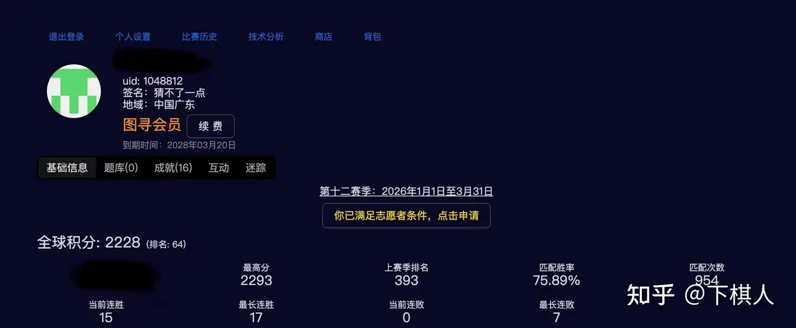
这个回答的主要目的更多的是让新手玩家对图寻这个游戏的基础知识有一些基本的概念与了解。阅读完本篇文章并不意味着你立刻就能成为图寻高手，但是文中所介绍的资源以及技巧一定会对你后续的游戏起到不小的帮助。
第零部分：资源（Resources）
国外网站：https://www.plonkit.net/guide （简称PI)
如果没有条件，就用国内的图寻文档（简称“文档”，就是从PI翻译过来的；如果一些新国家PI刚出，会有人翻译到图寻文档，因此会稍微滞后几天）https://www.yuque.com/chaofun/tuxun
如何使用文档？作为刚入坑的新手，请先阅读文档里每个国家的第一部份（识别国家）

Map Making App
这是一个更加高级的工具，国内应该是上不了。总的来说，这个网站允许你做“Map-Making”——你可以点击地图查看不同的地方长成什么样子，并且打一些标签分类。以下是答主的一个示例：
这是去年巴拉圭街景刚出来的时候答主做的一些研究。我手动对这400余个地点做了标记。在右侧选中“proper divided”（正经的分隔路），便会在地图上显示所有符合我tag（标签）的地方。
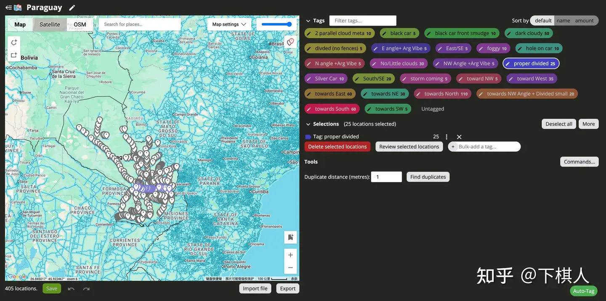
社群：如果有条件的话，可以上PI的Discord，里面有各种更加细分领域的社群，不过这是后话了。
B站和油管：B站有不少很厉害的大佬（以图寻H.M. 大神为例），以及很多图寻教程，是不错的学习资源。此外如果有条件上油管的话，职业选手ZigZag的频道Geoguessr Explained；世界冠军Radu C的频道Radu Continued都有很多非常详细和Well-explained的视频。
第一部分：入门知识（Starter Knowledge）
覆盖 （Coverage）
图寻是一款基于谷歌官方街景的游戏（国际版本Geoguessr在2013年就有了，国内的图寻就是国外那个版本搬过来的）。这就意味着所有没有谷歌官方街景的国家是不会出现在游戏中的（因此不要点击他们）。知道哪些国家和地区会出现在游戏中，哪些不会，是玩图寻的第0步。
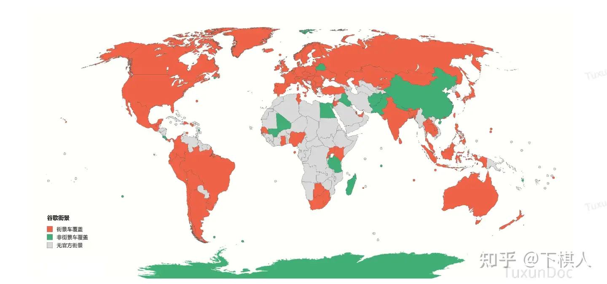
非洲的国家数量非常有限（去年已经新增了纳米比亚，地图上未显示）；图寻里的中国只有港澳台，藏南地区；亚洲区有相当一部份国家（主要是中亚西亚那边）没有覆盖。南美去年新增了巴拉圭（地图上未显示）。欧洲去年新增了波黑（地图上未显示）。
半球 （Hemisphere）
在No Move（简称NM，指可以原地转镜头以及放大，是国内版本图寻的主要模式）模式中，把太阳对到屏幕正上方；如果指南针偏北（红色箭头朝上），则大概率在南半球；反之亦然。
如果太阳比较大幅度的朝向东边/西边（可能只是偏北或者南一点点），请十分谨慎的使用这个规则。如果是阴天或者由于拍摄原因，太阳糊了一个天空没法判断在哪里，请不要使用这个规则。
越玩越熟练以后，其实很多时候是不用借助太阳帮忙的。不过刚开始入坑的时候，太阳很多时候可以直接帮你先定位到正确的半球。
行驶方向 （Driving Direction）
车辆左行还是右行是学完覆盖和半球以后第一个应该熟练掌握的内容。以下列出了所有左行国家；这些内容应该做到烂熟于心。
欧洲：英国，爱尔兰，马耳他，塞浦路斯
亚洲：印度（以及邻国——尼泊尔，不丹，孟加拉）；泰国，马来西亚，新加坡，印度尼西亚，日本，中国香港，中国澳门
大洋洲：澳大利亚，新西兰
非洲：肯尼亚，乌干达，非洲南部5国（南非，莱索托，斯威士兰，博茨瓦纳，纳米比亚）
美洲约等于没有（有一些零散的小岛，不过我们先不管他们，可以先约等于没有）
注意：在少部分街景中，由于在荒郊野外的土路，驾驶者可能不在正确的方向上。但总的来说，只要你在一个正规的道路上（哪怕是个小路），行驶方向的准确率还是非常高的。
道路线 （Roadlines）
道路线对于新手而言是一个很有用的线索。然而，道路线存在很多的变种，因此以下的总结只是最简单和入门的一般情况，然而包括道路线在内的任何线索都需要结合环境而做综合考量。
中间黄线（可以单黄线/双黄线）：美洲（除去智利——智利大部分情况中间是白线，当然也有特定的几条路是黄线，这里按下不表；阿根廷中间有可能是白虚线）；挪威。部分亚洲（留给答主自己研究）
中间白线：大部分欧洲国家；澳大利亚，新西兰；部分亚洲（留给答主自己研究）
外黄线（即道路两旁为黄线）：南非5国；中东地区。
基础街景车 （Basic Google Car Meta）
文档对应部分：https://www.yuque.com/chaofun/tuxun/basic_metacars
街景车永远是一个充满争议的话题。一部份人认为看街景车违背了图寻作为一个地理游戏的初衷，而另一部份人认为街景车本身作为谷歌街景里自带的东西，是这个游戏的一部份，使用街景车线索无可指摘。在这里答主本人不想过多探讨这个问题，但是不得不承认的是，如果你想在竞技层面有所建树，掌握最基础的街景车线索（Car Meta）是不可绕开的步骤。答主在此抛砖引玉，以下列举的国家都是有最明显的Car meta的国家，需要牢记于心：
非洲：加纳，肯尼亚，尼日利亚，塞内加尔，纳米比亚，乌干达，卢旺达
亚洲：哈萨克斯坦，蒙古，吉尔吉斯斯坦，阿曼，卡塔尔
美洲：危地马拉，巴拿马，哥斯达黎加，巴拉圭
此外，部分国家有相同的街景车；部分国家有多种不同版本的街景车；还有一些岛有很多特殊街景车，答主如果玩得多了自然会积累，但是以上这些是基础的部分。此外，在更高层次的对局中，不明显的街景车根据车的颜色，天线类型，以及结合拍摄年份，也是大有文章可做；不过那是玩到很后面才用担心的事情，这里按下不表。
街景代数 （Camera Generations）
之所以现在我先把他放在第一部份的最后，是因为我觉得这是一个新手刚入门可学可不学的东西。感兴趣的自行查阅。
文档对应部分：https://www.yuque.com/chaofun/tuxun/coverage_and_generations
第二部分 “环境”（Vibe)
在讲更多“实质性”的内容之前，我们有必要先来认真谈一谈“环境”这个概念。并不是每一个题目都有一个非常明确的线索：比如说一个很明显的北半球，左行，黄色车牌（等会会讲车牌）——英国；或者你的眼前就有一个巨大的牌子上面写着”止まれ“（日语的“停”）。
很多时候，你可能完全在荒郊野外，除了路面以及周围的植被环境（以及街景车——这里指的是非显性街景车，也就是没有被列举在“基础街景车”那一栏里面的，和水印——不过我们还是先不管这两个东西），并没有任何“明显的”线索。这种时候就需要你拥有足够的积累，进而产生对题目“环境”的感知。很多时候你会问一个看似不可解的野外题，图寻玩家是怎么解出来的？他们会回答你“看着像（这个地方）/Vibe（中文社区喜欢谐音称”歪脖“，这个词翻译过来是”氛围感“）。
虽然说在实际操作中，”环境“早已成为了（有一定基础的）图寻玩家潜意识的一部分，即，我们不会把环境里的东西拆开来分析；不过，常见的组成因素包括（但不限于）：
土壤颜色 (soil color)
比如红土在部分国家非常常见，最典型的有巴西，泰国，肯尼亚... 当然很多国家都有红土，但是玩多了你会发现一些国家出现红土的频率明显更高
气候类型 (Climate)
初中地理里学过的气候类型在图寻里可以派上不错的用场。你甚至不用细分的非常清楚，但是应当至少对热带温带寒带有一个最粗糙的感知，很多时候便够用了。
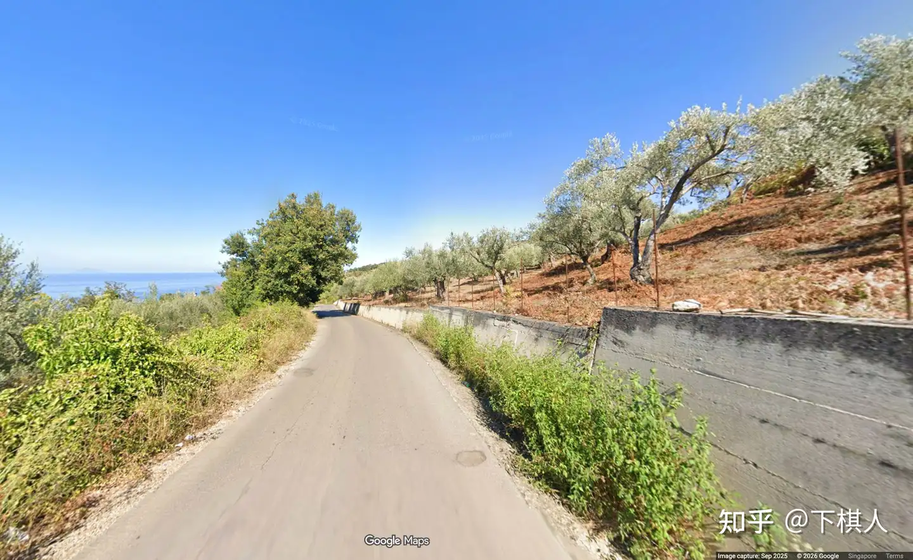
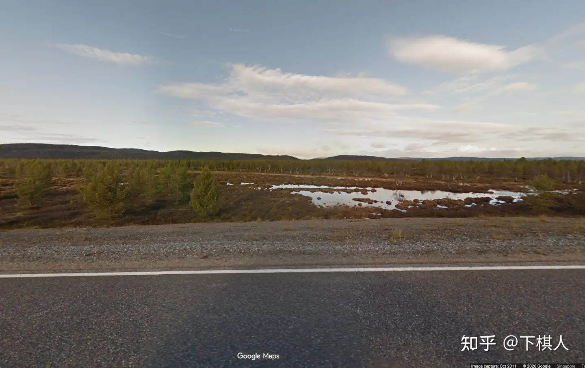
植被类型 (Vegetations)
植被类型不仅可以用来判断气候，观察和感知植被给人带来的感觉在很多题目里也会有很大的帮助。在更进一步的学习中，你会学习到辨认出某些特定的植物（比如说巴西有很多种不同类型的棕榈树），并且利用它们做出更准确的猜测。当然，这是后话。
（这一部分内容很难有很好的讲解办法，能做的就是不断在题目积累里去感知。）
地形（Landscape）
第三部分：基础线索（Basic Clues）
从这一部分开始，线索就变得更加具体起来。内容大致是按照笔者认为的重要程度排列的，然而你也可以自行跳到最感兴趣的部分。
域名（domain name）
每个国家都有一个独特的网址域名。这些域名很多都跟这些国家的英文名强相关，比如 .us (美国）.uk(英国）.br(brazil，巴西）等。在各种牌子上看到这些域名通常可以直接确定国家 ——但是有很小的概率碰巧在一个国家“错误的”出现了另一个国家的域名，所以请一定结合环境综合考量。
有一部分国家相互之间域名容易搞混或者跟英语名没有直接关系（通常跟本国语言里的国名有关系），举例：
.de 德国（Deutschland) .dk 丹麦 (Denmark)
.cz 捷克 （Czechia） .ch 瑞士 (Confoederatio Helvetica，拉丁语，有兴趣的可以自己查一查为什么瑞士要用拉丁语缩写作为域名）
.au 澳大利亚 (Australia） .at 奥地利 (Austria）
.rs 塞尔维亚 （Republika Srbija） .ru 俄罗斯 （Russia）
.hu 匈牙利 （Hungary）.hr 克罗地亚 （Hrvatska）
.es 西班牙 （España） .ee 爱沙尼亚 （Eesti）
当然以上只是一些常见的易混淆组合；在实战中如果遇到不会的，复盘的时候请自行查阅和巩固。
此外，如果你在一个车辆上看到了域名，则存在这个车是一个旅行者（traveler）的可能性，故请仔细观察环境以后决定是否信赖车上的域名。
车牌（license plate）
实战中的车牌大多数都是被打码(blur out)的，不过打码之后仍然可以看到车牌的色块，且对解题会有很大的帮助。即使你不认识某个特定的车牌，也可以通过是长牌（long license plate)还是短牌（short license plate)来锁定和排除一些国家。
欧洲
欧盟的车牌（如无特殊说明，车牌均指代车尾的车牌，即back license plate) 有一个蓝色的条，社区里一般称作为“欧盟蓝条”（European blue strip)，尽管在部分非欧盟国家，主要包括土耳其，以色列，巴勒斯坦，也有类似的蓝条。

特别的，在英国，荷兰，卢森堡使用黄色的车牌（英国脱欧以后的车牌就没有蓝条了）。丹麦的商用车辆也有黄牌，可以留个心眼，不过如果怕记乱可以先不用理它。
瑞士的车牌比较特殊，可以是长牌或者短牌（均无蓝条）：
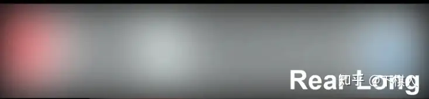
挪威的商用车牌是绿色的，这个感觉还比较常见，出场频率比丹麦商用黄色车牌要高：
在意大利和阿尔巴尼亚，车牌后面有双蓝条；此外，意大利的前车牌(front license plate)是短牌（欧洲唯一）且也有双蓝条。
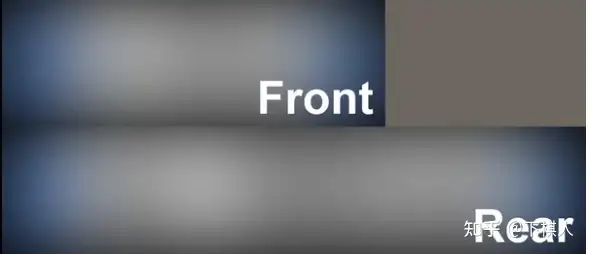
法国2009年以后的新车牌跟意大利的类似，不过右边的蓝条会小一些，且前车牌是长牌。
总体上来说有用的就这么多；还有一些小细节没有涉及到，不过在这里就先按下不表了。如果题主在实战中发现我没有讲到的，可以自行查看文档/搜索。
北美洲
对于新手玩家，你只需要知道加拿大，美国，墨西哥都用的是短牌；高阶玩家可以透过短牌的打码的色块来识别具体的车牌以做出更精确的猜测，比如美国不同的州使用不同的车牌。不过这一内容就不属于入门玩家需要管的东西了。
南美洲
巴西和阿根廷使用长牌；且上面是蓝色，下面是白色。可以通过联系阿根廷的国旗颜色来记忆。
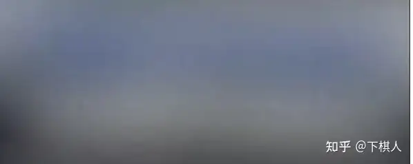
此外，阿根廷还有一种白色车牌中间有一个黑色的点的版本，长这样：
哥伦比亚拥有黄色牌照；是在南美洲断档式最常见出现黄牌的国家。
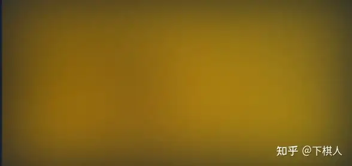
唯一的特例是秘鲁，它们的的士上也用黄色车牌，但是黄色的深浅有所差别：
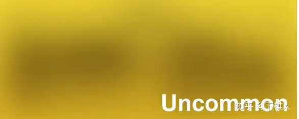
这就基本覆盖完了南美洲车牌的主要内容。
亚洲
其实亚洲看车牌的情况比较少。不丹使用红色短牌；吉尔吉斯斯坦使用“红条”长牌。其他车牌里比较有用的就是马来西亚和印度尼西亚的车牌区分，请自行阅读其中任意一个国家的文档，应该在一开头就有讲。
非洲
纳米比亚使用黄色长车牌
至此，我把主要的基础车牌已经介绍完了。很显然，更细分的车牌（比如美国不同州使用的不同车牌）和有些少见的车牌并没有覆盖在本章节的内容里。熟练掌握上述所有这些车牌已经可以对你的游戏起到非常大的帮助了。
语言（languages）
语言线索无处不在。关于语言，主要分为3个层次：
1）看文字，能识别出是哪种语言
2）对于部分语言，学会对应的拉丁转写方式
3）知道这些语言里一些常见词语的具体意思
对于3），如果您对语言真的很感兴趣，可以在遇到以后自己在对局结束查阅；对于2），最常见且收益最高的是俄语转写拉丁语（答主本人之前可以做到比较熟练，现在已经生疏很多了），此外有一些顶级高手会学习包括但不限于泰文，孟加拉文等的转写（对你没听错，就是这么夸张）。
不过对于新手来说，能稳定做到1）就已经能大幅度的提升你的游戏水平了。关于语言的识别，其实我个人建议直接问AI，让AI给你讲怎么区分。总的来说，每个大洲最重要的应该先学会识别的语言/语系列举如下：
亚洲
日，韩，泰，柬埔寨，孟加拉语，印地语（印度有多种语言，能用来区域猜测——感兴趣的请参考文档里印度篇第二步—区域和州特定线索 语言），阿拉伯语，希伯来语 等。
欧洲
英语，西班牙语（除了西班牙还有拉美地区），葡萄牙语（葡萄牙，巴西），法语（法国，比利时，加拿大魁北克，德语，西里尔（系），希腊语，土耳其语，北欧语系 等。
当然，列举出全部的语言是不现实的也是没必要的，需要大家在不断的练习和实战中自行积累和总结。
电线杆（electricity/utility poles）
是的，你没看错，电线杆的样式以及变电器也可以帮助我们猜测。这一章节里会大致按照重要程度排序列出最简单且重要的几种，你应该掌握的电线杆类型，以及主要分布的国家和地区。
巴西电线杆（Brazilian pole）
样式：
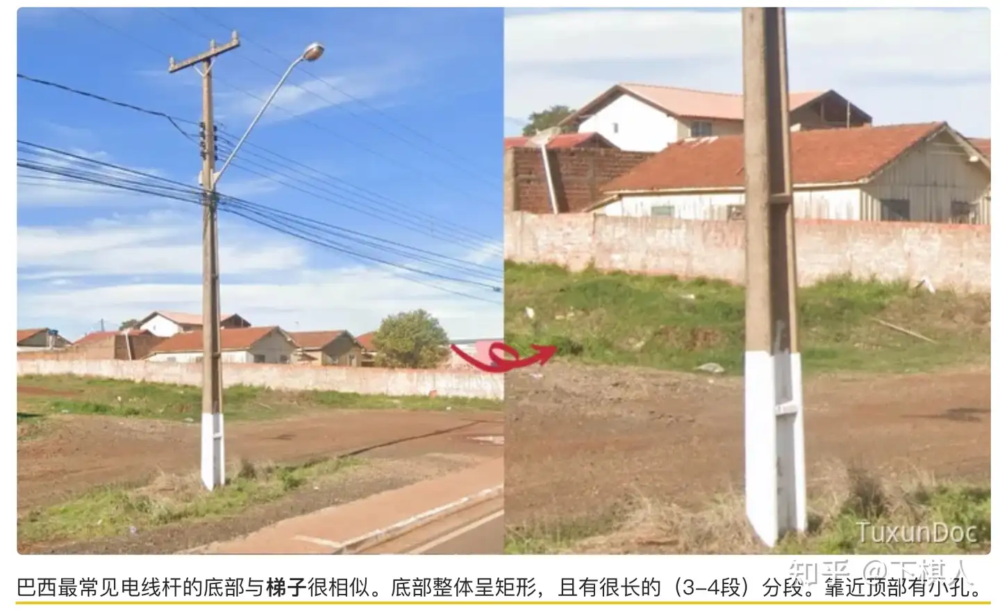
共同特征：1.底部形似梯子 2 顶上有一串小孔。
常见国家：巴西，巴拉圭，葡萄牙；此外，比利时有时候也有类似的杆子
葡萄牙电线杆跟巴西的极其相似，笔者猜测是这两个国家的历史原因导致的。
法式电线杆 （French-style pole)
样式：

共同特征：1.底部形似梯子（但是跟巴西的底部长的还是有些不一样，请自行对比图片）2.部分杆子顶上有一个类似于“扇子”的形状。
常见国家：法国，西班牙；以及非洲曾经一些法国殖民地，包括（但不限于）塞内加尔，突尼斯。此外，偶尔的在其他一些国家的随机区域，您也有可能见到法式电线杆。此外，比利时有时候也有类似的杆子（没错，又是比利时）。
Holey poles （洞洞杆，这里把英文放前面的原因是我们比较少说这个的中文）
样式：
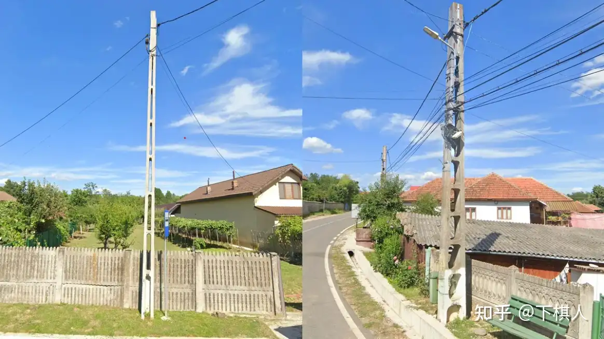
共同特征：顾名思义，洞洞杆上全是洞。与前文两种杆子的区别在于，Holey poles上的洞一定是穿透杆子的横面的。请自行对照图片辨别。
常见国家：罗马尼亚，匈牙利，波兰（其中一般来说，波兰的洞不会延伸到杆子的最底部——然而这并不绝对；笔者也见过罗纳米亚的洞洞杆亦没有延伸到最底部的。）；此外，越南电线杆的其中一种也有Holey poles。
泰式电线杆 (Thai poles)
样式：
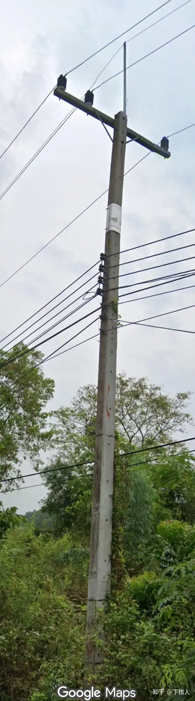
共同特征：呈长方体，上面有很多小洞
常见国家：泰国；此外，柬埔寨以及斯里兰卡有时候可以见到非常相似的杆子。请自行查阅文档作功课，或者结合题中其他线索再做判断。此外，比利时有时候也有类似的杆子（没错，又又又是比利时——都说到这了，请自行查阅文档-比利时，或者上Map-making app逛一逛街景）。
美洲变电器 （American style electric transducer）
样式：
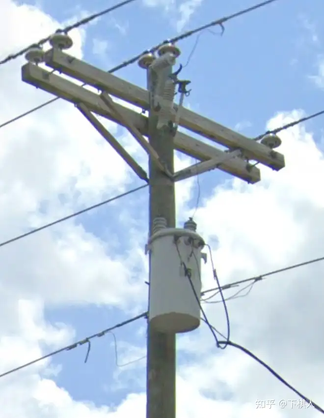
共同特征：圆柱形变电器
常见国家：可以大胆排除欧洲。常见于美国，加拿大，墨西哥，智利等所有美洲国家；此外根据笔者经验，亚洲里这种变电器在菲律宾很常见。
美加绝缘子 （American/Canadian style insulators）
样式：

共同特征：1）一般在木头杆子上 2）有一个如图所示附接在杆子上的绝缘子，请自行看图。
常见国家：美国，加拿大
当然，跟许多别的线索一样，我不可能在此列举出所有不同种类的电线杆。部分电线杆尽管更常见于某些国家，但在其他国家亦能见到分布，比如上文我没有讲到的保加利亚式电线杆(Bulgarian style pole) 。大家在遇到的时候自行积累总结即可。
路桩 （bollards）
你能猜到下面这张图是哪个国家吗？
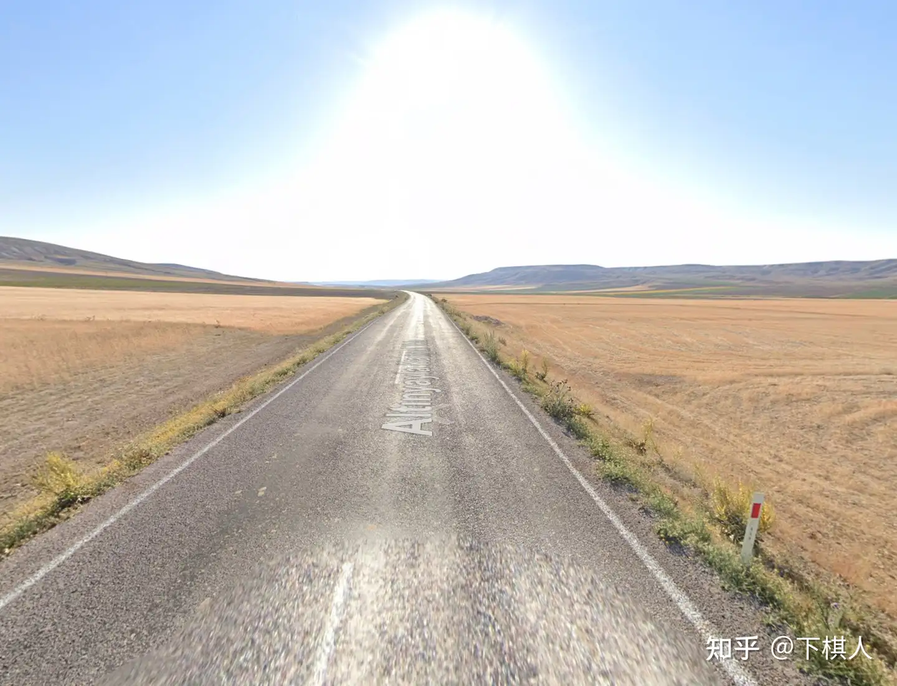
答案是土耳其。结合这一章节的标题，你也许已经猜到了，核心线索就藏在路边的这个东西里：

由于街景车在路上行驶，因此路桩在街景里极为常见，也是辨认国家极好的线索。初学阶段想要一口气全部记住可能会比较困难，还是建议慢慢积累，循序渐进。限于篇幅原因，这里放一张路桩种类最多的欧洲的信息图 (source: Reddit):
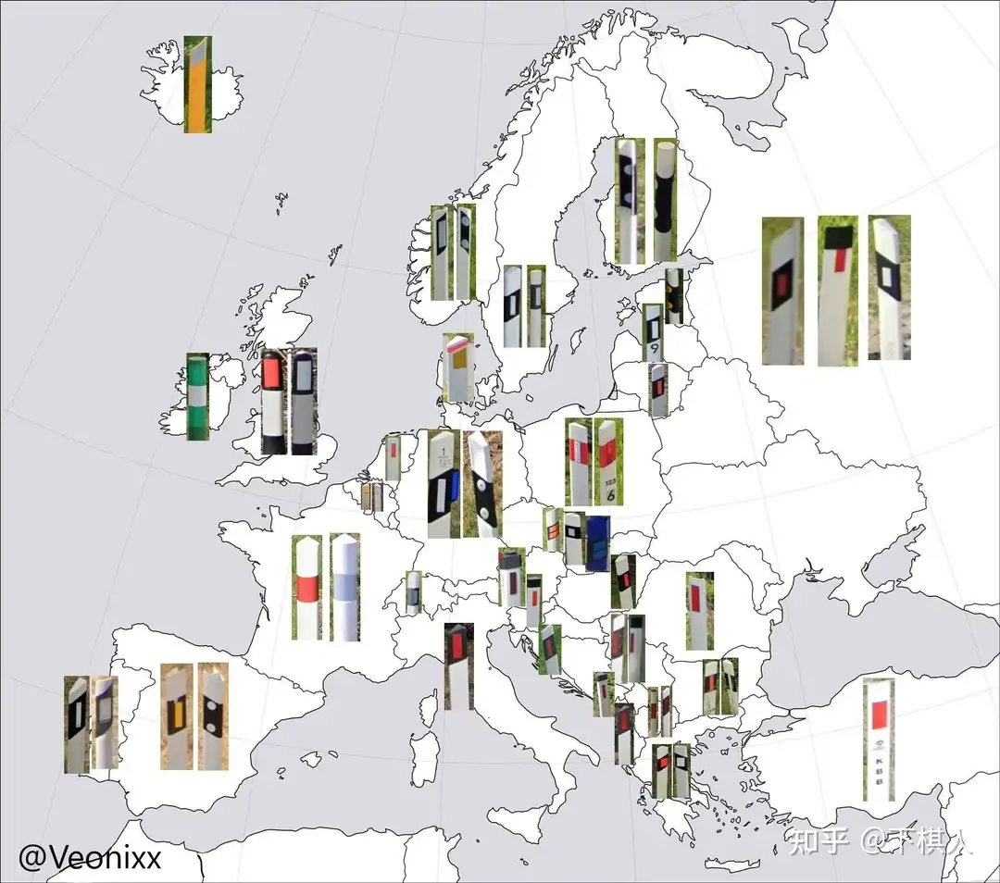
此外，加拿大，美国的路桩可以用来做区域猜测（region guess）；墨西哥，厄瓜多尔，秘鲁；澳大利亚，新西兰；泰国以及很多别的国家都有自己的路桩。大家遇到了自行查阅文档积累即可。
至此，我大概已经介绍了哪些类型的线索是可以被我们利用的。当然，每一个部分我都只放了最具有代表性的几个例子，因此上文主要起到一个让大家对自己后续潜在的学习提供一个大致的方向。很多更加细节或者难以单独分类的东西我思索再三，做了取舍，因此没有放上来。这些内容包括（但不限于）护栏类型，转向标（这两都属于基础设施相关），更细节的道路线解析，更多非明显的街景车线索，更细节的植被分类，等等。
第四部分 怎么进步？区域猜测及更多（How to improve? Region-guessing and more）
细心的读者不难发现，上文中所有的线索都是指向国家级别的辨认。然而，在更高水平的游戏中，更加细化的精确到国家内部的特定区域（简称“区猜”）便变得重要起来。大体来说，区猜分为两种流派：
- 研究街景车和水印分布的（简称“车C流”）。最“臭名昭著”的车C国家非俄罗斯莫属了。俄罗斯区猜第一人Finbarr有一个长达127的谷歌文档，按照街景车的颜色，天线类型，以及拍摄年份做了详细的拆分。
- 研究所有现实世界里存在的线索（以著名社群‘Real Meta Research Group'，简称RMRG为例）。除了前文提到的植被和各种基础设施，还包括（但不限于）构词学，建筑学...
如果你能读到这里，你应该对这个游戏基础的内容有一个大概的了解了。与别的很多事情一样，这个游戏想要进步，无外乎：
- 大量的实战/刷题经验，以及复盘总结错题
- 大量的阅读文档和逛社群
- 独立研究和泡在谷歌街景里。
最终，希望大家在不断的探索中感受到图寻的魅力。
以上。